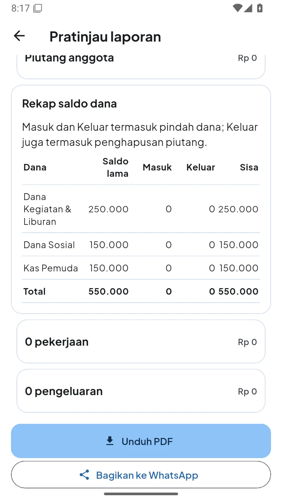

Buku & pembagian dana
Buka periode buku, tentukan nama dana dan persentasenya. Atur dana yang baru bisa dipakai setelah tutup buku.
PEMBUKUAN PEMUDA MASJID
Biar urusan kas lebih jelas,
dan kebersamaan tetap jadi yang utama.
Dari catatan borongan, kehadiran, dan denda hingga laporan keuangan. Semua dalam satu aplikasi, langsung dari genggaman pengurus.
Versi {{version}} · Android {{minimumAndroid}}+ · APK, 61 MB

Tanpa akunLangsung mulai pembukuan.
Bisa dipakai offlineData tetap di perangkat Anda.
Siap jadi laporanSimpan PDF, lalu bagikan.
01 / FITUR LENGKAP
Dirancang untuk alur kerja pengurus pemuda masjid: mulai mencatat, memantau, sampai mempertanggungjawabkan.
Buka periode buku, tentukan nama dana dan persentasenya. Atur dana yang baru bisa dipakai setelah tutup buku.
Masukkan saldo dari luar aplikasi. Bagi sesuai persentase atau isi nominal per dana, lalu lihat riwayat koreksinya.
Kelola anggota, pemberi kerja, upah, dan pekerjaan yang berjalan satu atau beberapa hari.
Catat Hadir, Sakit, Izin, atau Alpa per hari kerja. Denda dihitung otomatis; status Sakit tidak dikenai denda.
Catat penerimaan dan pengeluaran sesuai kategori. Pengeluaran mengurangi dana yang digunakan.
Bedakan tagihan pemberi kerja dan denda anggota. Pantau pembayaran tanpa mencampurnya dengan uang kas nyata.
Pantau saldo tiap dana serta perpindahan antar-dana, termasuk rekap saldo awal, masuk, keluar, dan sisanya.
Tinjau pembagian dana sebelum menutup periode. Hasil tutup buku tetap saat piutang lama dibayar kemudian.
Lihat ringkasan dan grafik. Buat laporan organisasi atau per anggota, simpan PDF, dan bagikan melalui Android.
Ekspor dan impor file cadangan. Pindahkan pembukuan ke perangkat atau pengurus baru tanpa akun bersama.
Aktifkan kunci PIN aplikasi dan telusuri riwayat perubahan untuk membantu menjaga catatan pembukuan.
Bahasa Indonesia, tema terang dan gelap, serta profil dan logo organisasi yang bisa disesuaikan.
02 / LIHAT LEBIH DEKAT
Screenshot asli dari KasKita {{version}} dengan data contoh. Pilih tampilan untuk melihat detailnya.
01 / 05
Lihat saldo lama, dana masuk, dana keluar, dan sisa saldo dalam satu rekap. Lebih mudah menjelaskan posisi kas kepada anggota.
Rekap dana juga tercantum dalam laporan PDF organisasi.
Screenshot aplikasi · Data contoh
03 / MULAI DARI SINI
KasKita tersedia sebagai file APK untuk Android {{minimumAndroid}} atau lebih baru. Belum tersedia untuk iPhone.
Ketuk tombol unduh di situs ini. Tunggu sampai file APK KasKita selesai diunduh.
Buka file APK dari Unduhan. Jika diminta, izinkan pemasangan dari browser atau pengelola file yang Anda pakai. Setelah selesai, izin ini bisa dimatikan lagi.
Isi profil organisasi, buka buku, lalu atur anggota dan pembagian dana. Sudah punya cadangan? Impor lewat pengaturan awal.
04 / TANYA JAWAB
Hal-hal yang perlu diketahui
sebelum mulai mencatat.
Tidak. Pembukuan KasKita berjalan offline dan tersimpan di perangkat, tanpa akun atau server pembukuan. Internet dibutuhkan untuk mengunduh aplikasi atau mengirim file melalui layanan lain.
Belum. KasKita bukan aplikasi sinkronisasi bersama. Gunakan satu perangkat sebagai sumber catatan. Saat berganti pengurus, ekspor cadangan dan impor di perangkat baru.
Buat cadangan secara berkala lewat Pengaturan → Cadangan, lalu simpan salinannya di luar perangkat. Menghapus aplikasi atau mereset ponsel bisa menghapus data lokal. Kunci PIN tidak menggantikan cadangan.
Versi ini dibagikan langsung dari situs KasKita, bukan melalui Play Store. Android dapat meminta izin pemasangan dari sumber ini. Pastikan file berasal dari situs ini; jika Android memblokir pemasangan karena alasan keamanan, jangan abaikan peringatannya.
Nama dan ikon baru KasKita, pencatatan saldo lama dari luar aplikasi, pembagian saldo lama sesuai persentase atau per dana, riwayat koreksi saldo lama, dan rekap saldo dana dalam laporan PDF.
Belum. Situs ini adalah halaman informasi dan unduh. Aplikasi KasKita saat ini hanya tersedia untuk Android {{minimumAndroid}} ke atas.
CATATAN KECIL. TANGGUNG JAWAB BESAR.
KasKita {{version}} · Android {{minimumAndroid}} ke atas · 61 MB
File APK untuk Android. Unduhan melalui GitHub Releases.
{{sha256}}